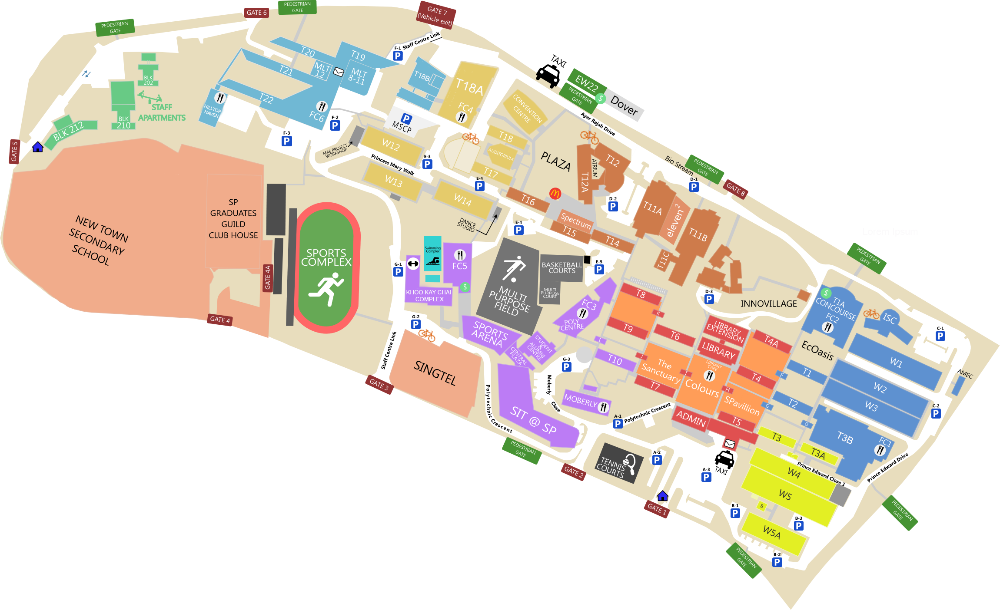

Life in a campus is vastly different to life in secondary schools. Here are some of my findings.
Classes
The first difference here is immediatlly apparent on the first day of classes. And that is the sheer size of our campus. Back in secondary school, I could show up to school 5 minutes before class starts and be completely fine. But come poly life, I have to reach campus about 15 minutes in advance otherwise I would need to sprint all the way to class in order to not be late. This is slightly augmented by the 15 minute grace period the school gives at the start of every class, but regardless, the extra walking distance to class is a very apparent difference from Secondary school to Polytechnic.
Also, our classes are now much more flexible than as compared to back in secondary school, our lecturers can randomly cancel class for no apparent reason, and they often release us early, sometimes up to 2 hours before class is supposed to end. These changes were admittedly pretty jarring for a fresh secondary school graduate like myself, but I got used to it after a while, and honestly, I probably cannot go back to the life i once had in Secondary school.
Food
Another stark contrast to secondary school is the variety of food options to choose from in SP. There are 6 food courts to choose from, and a couple of others. As compared to secondary school with its 1 canteen, this is a stark contrast. Sure some of the food courts are really far away from my class, but now our break times are much longer. Back in secondary school, our reccesses were only half an hour long, but now, they can go up to 2 hours long, sometimes even longer due to certain circumstances like cancelled lessons, as previously mentioned. For those who are interested, here are my opnions of the food courts around Singapore Polytechnic.
| Food Court No. | Walking time(Minutes) | Thoughts | Score |
|---|---|---|---|
| 1 | 15-20 | A popular food court, especially among students for it's variety of decent food for a cheap price and air-conditioned area. I personally don't like it for its distance from my building. | 6/10 |
| 2 | Idk, never been there yet, no one really talks about it. | ||
| 3 | 10 | Has a couple of unique food option like salads, Vietnamese, among others. I usually go there fortnightly to try out some new cuisines. | 6.5/10 |
| 4 | 5 | Just like Food Court 1, this place has air-conditioning, making it a popular choice for business, arts, and computer students alike. However, it's brought down a peg by its lack of variety in food stalls. | 7/10 |
| 5 | 10 | Rather popular among students with a variety of fast food options like Subway®, KFC®, and especially Starbucks®. This food court is packed on wednesdays because of Starbuck's® giving students a free upgrade on wednesdays. | 8.5/10 |
| 6 | 2 | Located right below my building, food court 6 is a go-to for getting a quick bite during our classes' 5-15 min breaks. However, this Food Court is mostly scorned at by the other students at SP due to its thourough lack of food options. Perosnally, I'd recomend either the western food store or the waffle store as they serve decent food for a cheap price | 7/10 |
| Others | 10 | There is a Mcdonald's® restaurant near the entrance to the school. The prices there are cheaper than anywhere else in Singapore, and there are a bunch of extra tables nearby so finding a seat is never a problem. This place is my go-to for breakfast in school, or when I want to try out some new Mcdonald's® products without breaking the bank. | 9/10 |
| 12 | Nearby the said extra tables, the is an Old Chang Kee food truck. However unlike the Mcdonald's®, the prices here are more or less the same as every else in Singapore, thus the food here is typically really bad in terms of value as compared to other offering around the campus. | 6/10 | |